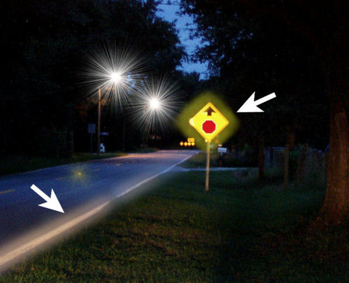
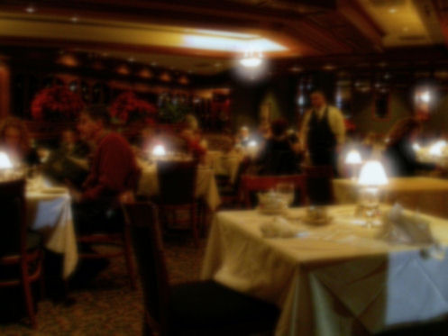
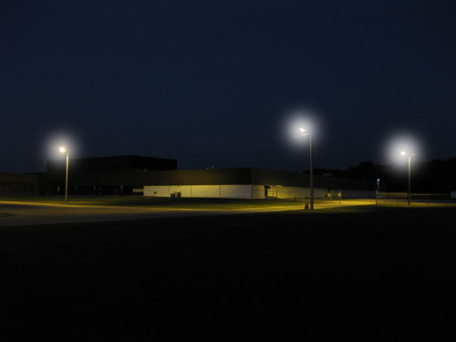

Ореолы после операции LASIK
Эффект ореола, или ореолообразные фигуры, обычно возникают после операции LASIK. Как и при вспышках звезд, выраженность ореолов увеличивается с увеличением размера зрачка. В индустрии LASIK для описания этих визуальных отклонений используется термин "блики".
После процедуры LASIK вокруг любой относительно светлой области или отражающего объекта могут появиться ореолы. Специалисты в области LASIK не рассматривают эти нарушения зрения как осложнение, даже если пациент больше не сможет управлять автомобилем ночью. Ореолы вокруг глаз и другие нарушения зрения после операции LASIK могут привести к снижению качества жизни.
Большое ретроспективное исследование пациентов с LASIK показало, что о появлении ореолов сообщили 30%, блики - на 27%, а вспышки звезд - на 25%. (Бейли и др., 2003)
На изображении ниже желтый предупреждающий знак и белая полоса на краю дороги окружены ореолом, в то время как уличные фонари подсвечены звездочками.

На рисунке ниже показаны ореолы вокруг настольных ламп и потеря контрастной чувствительности после операции LASIK при тусклом освещении.

Ниже показаны незначительные ореолы после операции LASIK.

Ниже приведена ночная сцена, изображающая ореолы после операции LASIK, которые становятся все более выраженными.